目次をひらく
1はじめに
お店では役割の違う端末を使い分けています。
| 端末・ページ | できること |
|---|---|
| レジ端末 | 入店・精算・物販・会計履歴・日報（締め）・商品の登録。在庫は見るだけ。 |
| 在庫端末（2台目のタブレット） | 棚卸し・ロス/調整・発注点の設定。 |
| 客用ディスプレイ | 常連さんの利用時間と、お会計の金額を表示（操作はしません）。 |
| 要発注リスト（Web） | スマホで発注・入荷の登録。reorder.html（パスワードは売上レポートと同じ） |
画面は下からせり上がる「シート」で開きます。閉じるときは右上の 閉じる、またはシートの外の暗いところをタップ。
金額や個数のテンキーは、指が触れた瞬間に入力されます（強く押し続ける必要はありません）。
2メイン画面
いまお店にいるお客さまがカードで並びます。経過時間と料金は自動で増えていきます。
← 写真は横にスクロールできます
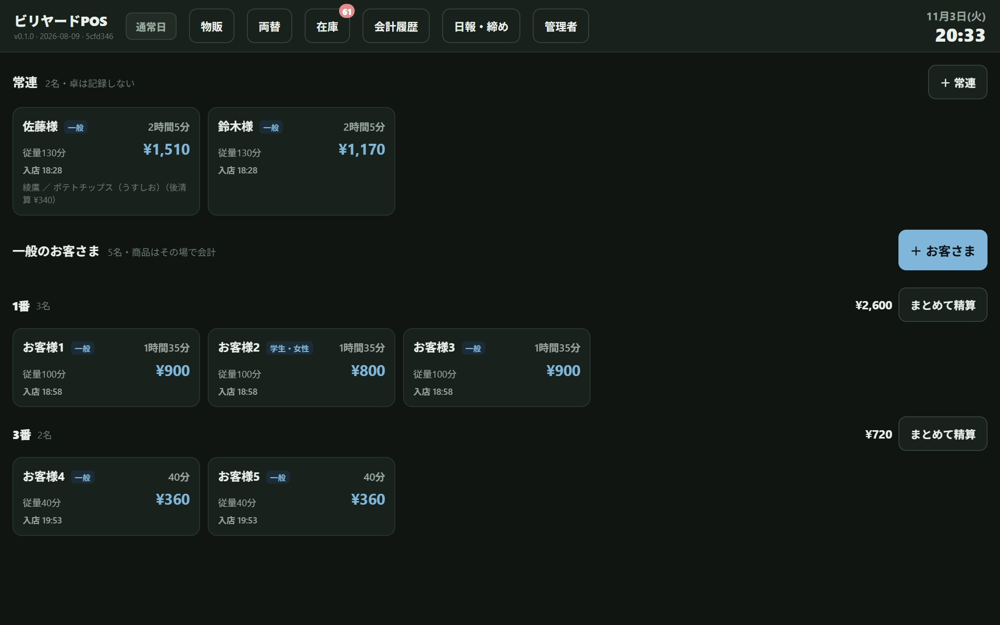
- 左上の 通常日 は料金の日（通常日・レディースデー・半額デー）。日付から自動で切り替わります。
- 在庫 の赤い数字は、在庫切れ・要発注の品数です。
- カードには「入店時刻」「料金の内訳」、パック料金の時は「○時まで料金据え置き」も出ます。伝票に商品をつけている時は商品名と金額（後清算）も。
3お客さまの入店
一般のお客さま
← 写真は横にスクロールできます
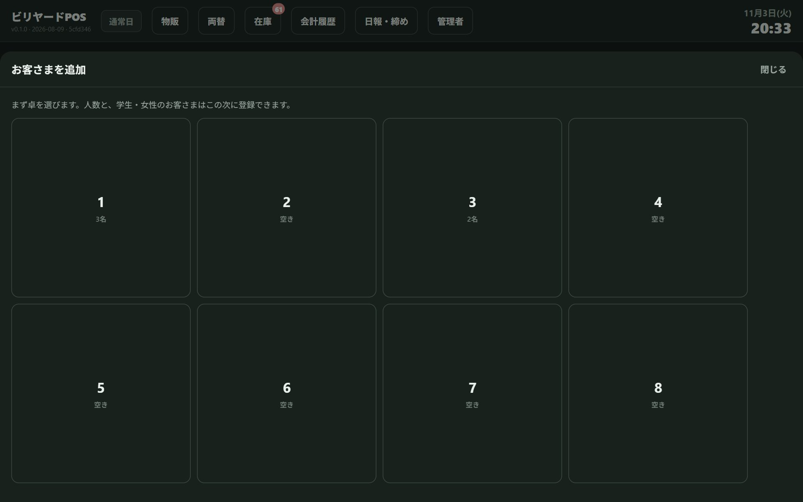
← 写真は横にスクロールできます
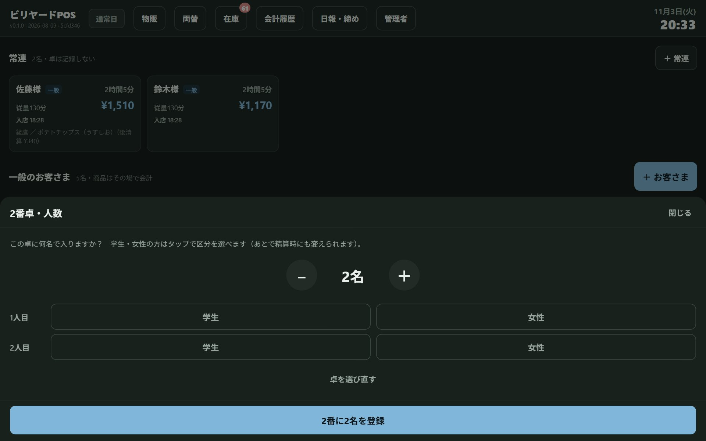
- メイン画面の ＋ お客さま をタップ。
- 使う卓（1〜8番）をタップ。
- 人数を − ＋ で合わせ、学生・女性の方は1人ずつ 学生 女性 をタップ（精算の時にも変えられます）。
- ○番に○名を登録 で入店。名前は「お客様1、お客様2…」と自動でつきます。
常連さん
← 写真は横にスクロールできます
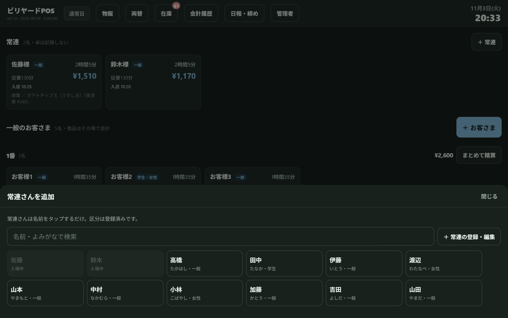
- ＋ 常連 をタップ。
- 名前をタップするだけで入店（区分は登録済み）。見つからない時は上の欄で名前・よみがなを検索。
＋ 常連の登録・編集 で「お名前」「よみ（必須）」と学生・女性を入れて 追加。名前は後から変えられないので、間違えたら削除して登録し直します（削除はすぐ消えます）。
4精算（1人）
お客さまのカードをタップすると精算画面が開きます。料金は開いた時刻で止まります。
← 写真は横にスクロールできます
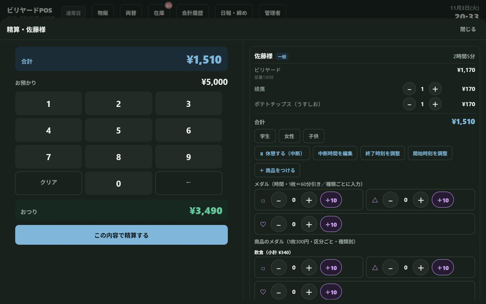
- 右側で内容を確認。区分（学生・女性・子供）が違えばタップで直します。子供は無料です。
- メダルがあれば入力（5. メダル）。
- 左のテンキーでお預かりを入力 → おつりが出ます。
- この内容で精算する → 確認画面で 精算する。
- ドロワが開くのでおつりを渡し、閉じる。
← 写真は横にスクロールできます
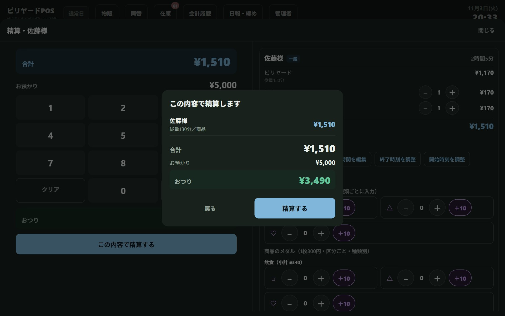
← 写真は横にスクロールできます
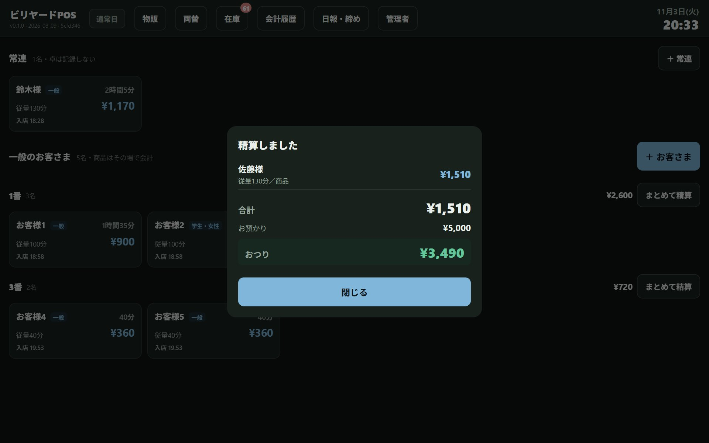
右側の商品の − ＋ で数量を直せます。1個の時に − を押すと「商品を外す」の確認が出ます。商品を追加する時は ＋ 商品をつける（物販画面が開くので選んで 伝票につける）。
メダルだけで¥0のお会計：お預かり¥0のまま精算できます。ドロワは開きません。
入店を間違えた（すぐ帰った等）：精算画面のいちばん下の「入店を取り消す（会計しない）」。会計は記録されません。
5メダル
種類（□・△・♡）ごとに枚数を入れます。合計枚数で割引されます。
← 写真は横にスクロールできます
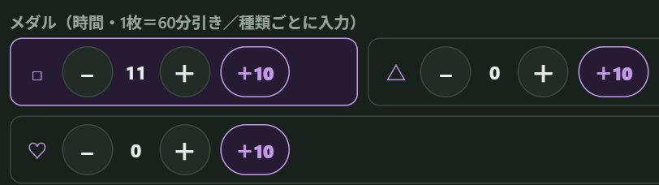
| どこに使う | 割引 | メモ |
|---|---|---|
| 時間（ビリヤード） | 1枚＝60分引き | 精算画面の「メダル（時間…）」に入力。 |
| 商品 | 1枚＝300円引き | 区分ごと（飲食・備品・その他・たばこ）に入力。おつりは出ません。たばこは1箱ずつ当てます。 |
| たばこのカートン | 使えません | カートン売りはメダル対象外。 |
＋10 で10枚ずつ増やせます。商品のメダルは「これで0円」になる枚数で止まります（それ以上は入りません）。
※ TKのメダルは取扱いを終了したので入力欄にありません（過去の記録の集計には残ります）。
6まとめて精算
複数のお客さまを一度に精算します。5人のうち2人だけのように、選んだ人だけ精算できます。
← 写真は横にスクロールできます
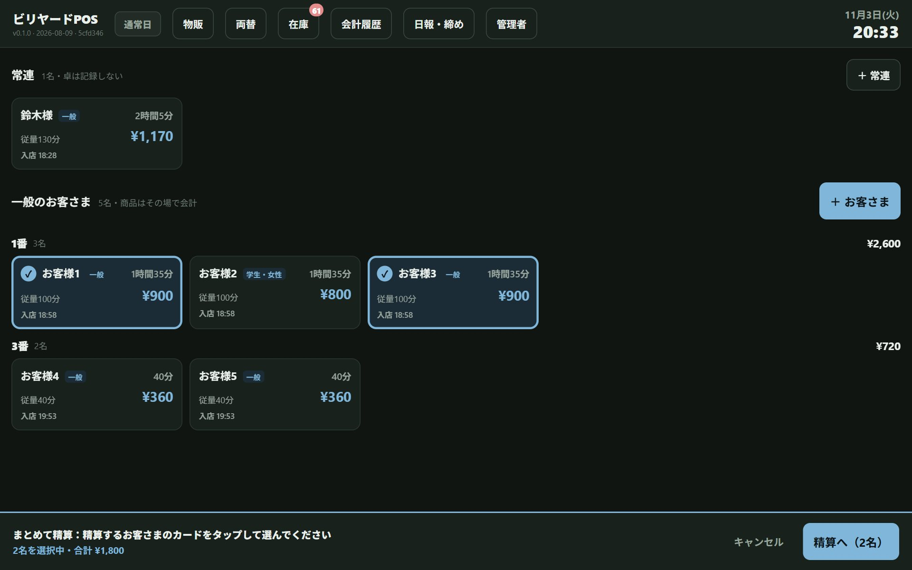
- 卓の右の まとめて精算 をタップ（2名以上の卓に出ます）。
- 精算する人のカードをタップ → ✓ が付きます（もう一度で外れる）。別の卓の人や常連さんも選べます。
- 下のバーで人数と合計を確認して 精算へ（○名）。
- 精算画面には選んだ人だけが並びます。あとは1人の時と同じ（メダルは1人ずつ入力できます）。
← 写真は横にスクロールできます
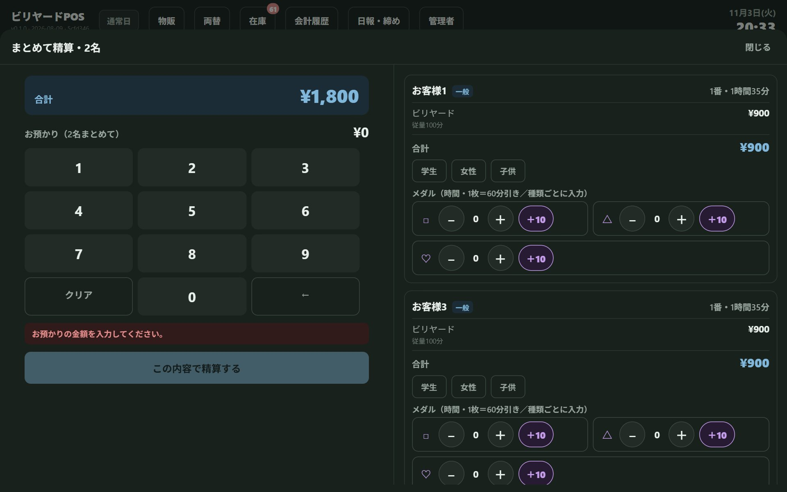
7休憩・時間の調整・卓移動
精算画面（1人の時）のボタンから行います。
| ボタン | 使う時 | 理由 |
|---|---|---|
| ⏸ 休憩する（中断） | 休憩の間は料金を止める。再開は ▶ 休憩を終了（再開）。カードが赤くなります。 | 不要 |
| 中断時間を編集 | 休憩の開始・長さを後から直す。 | 不要 |
| 終了時刻を調整 | 終了の打ち忘れ・申告など。 | 必須 |
| 開始時刻を調整 | 入店の打ち忘れ・書き間違い。 | 必須 |
| 卓を移動 | 一般のお客さまの卓を変える（時間はそのまま）。 | 不要 |
← 写真は横にスクロールできます
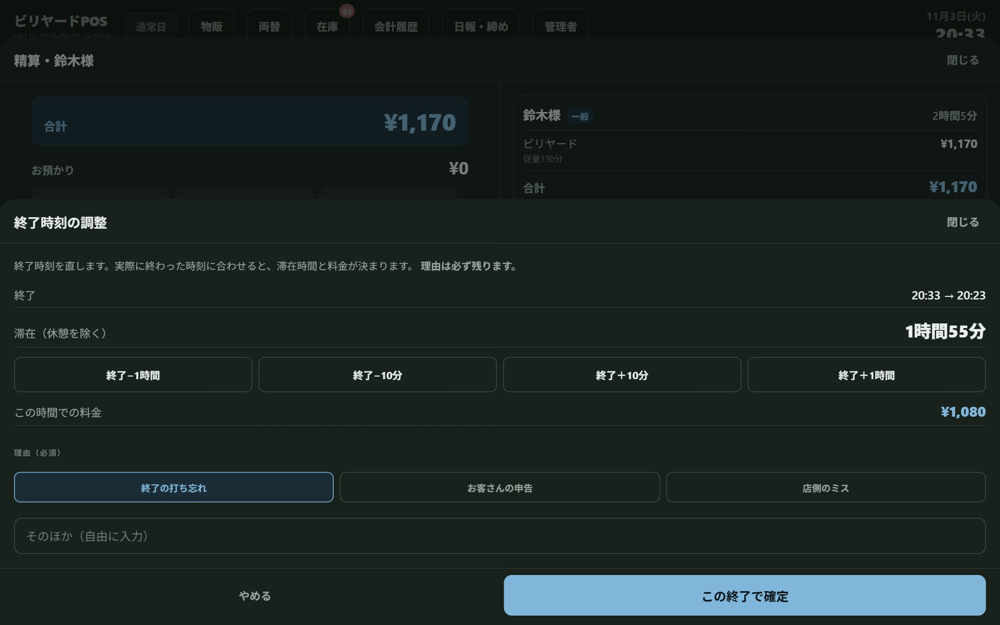
調整した内容と理由は記録に残り、精算画面と会計履歴に表示されます。
8物販（その場で会計）
ビリヤードをしないお客さまの商品は、メイン画面の 物販 から会計します。
← 写真は横にスクロールできます
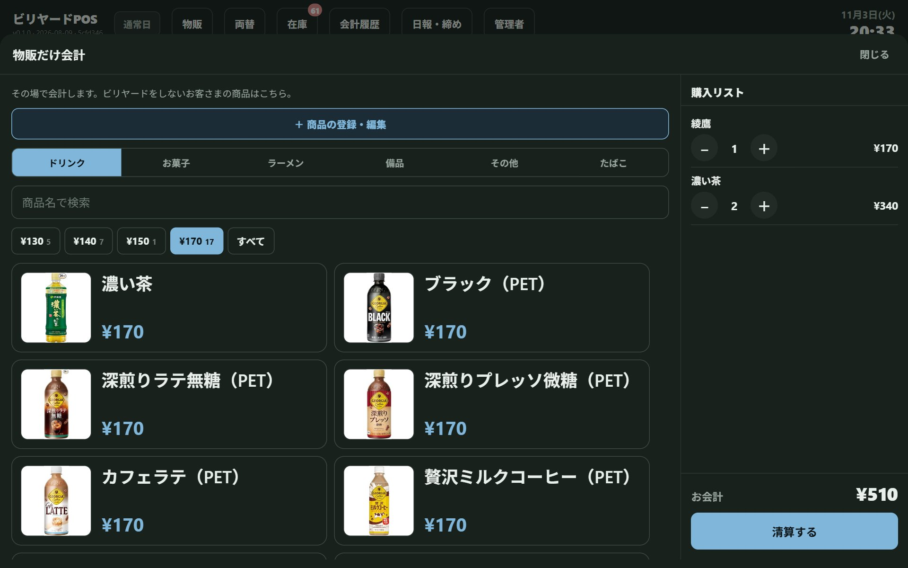
- カテゴリを選び、品数の多いカテゴリは値段のボタンで絞ります（すべて で全部）。
- 商品をタップすると右の購入リストに入ります。数量は − ＋。
- 清算する → メダルがあれば入力し、お預かりを入れて 会計する。
← 写真は横にスクロールできます
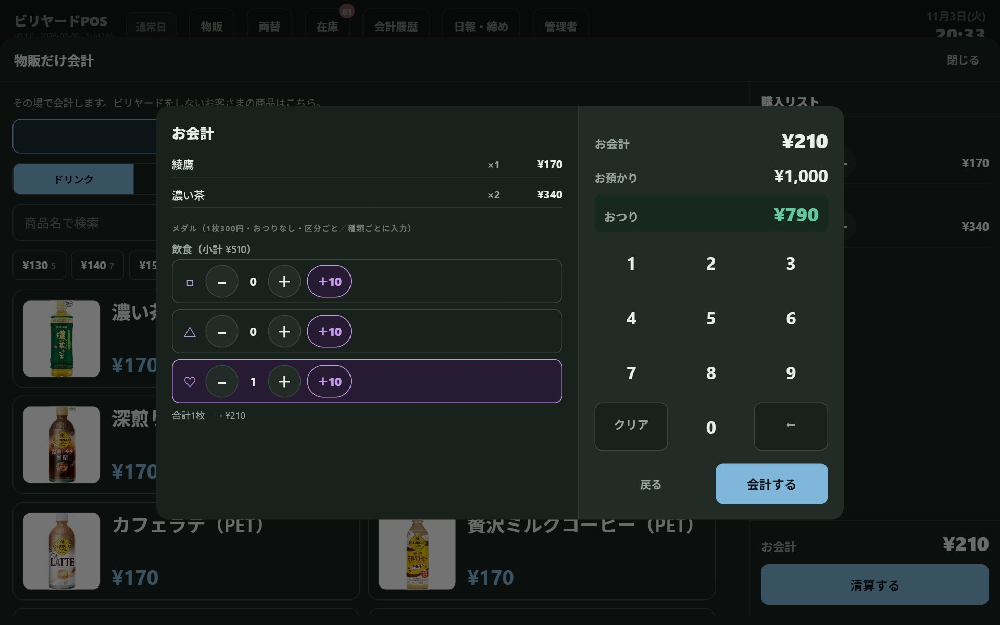
たばこ
← 写真は横にスクロールできます
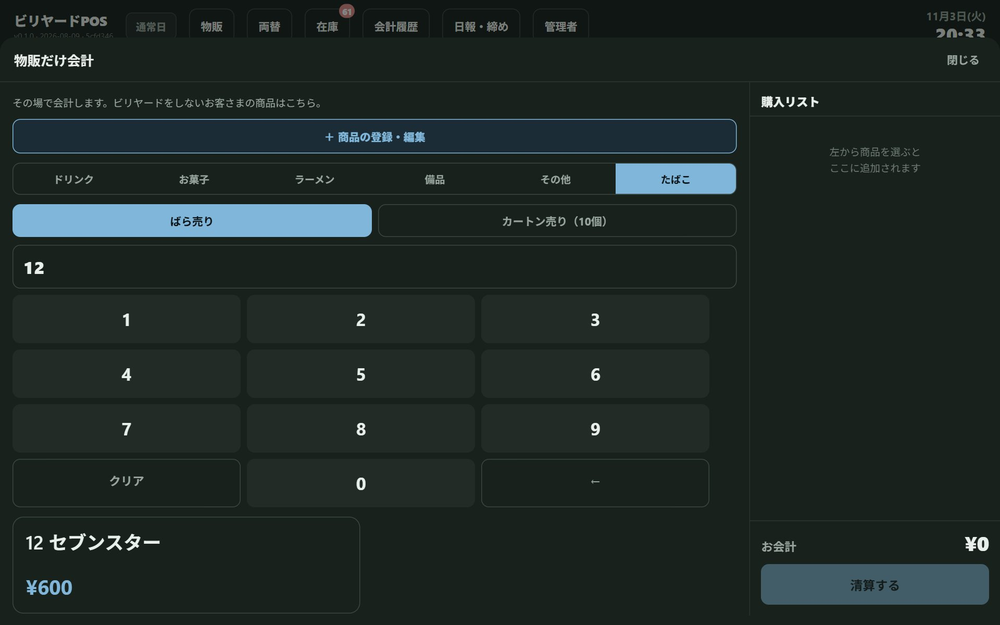
- お客さまの言う棚番号をテンキーで入れると、その銘柄が出ます（番号ぴったりで検索）。
- カートン売り（10個） にすると10個単位（値段は10倍・メダル不可）で会計します。
備品（チョーク・タップなど）
← 写真は横にスクロールできます
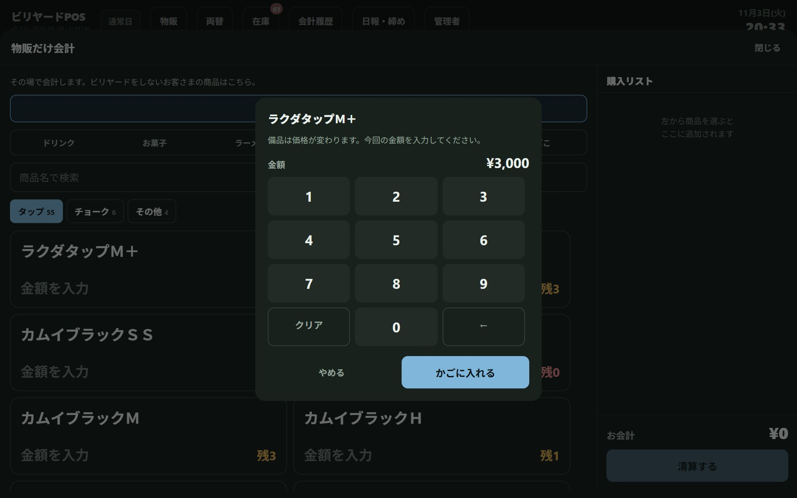
備品は値段が毎回違うので、種類を選んで商品をタップ → 今回の金額を入れて かごに入れる。
メイン画面の 両替 で、会計なしでドロワを開けられます。
9会計履歴（取消・修正）
打ち間違えた会計は、ここから直します。取消・修正ができるのは本日の締める前の分だけです。
← 写真は横にスクロールできます
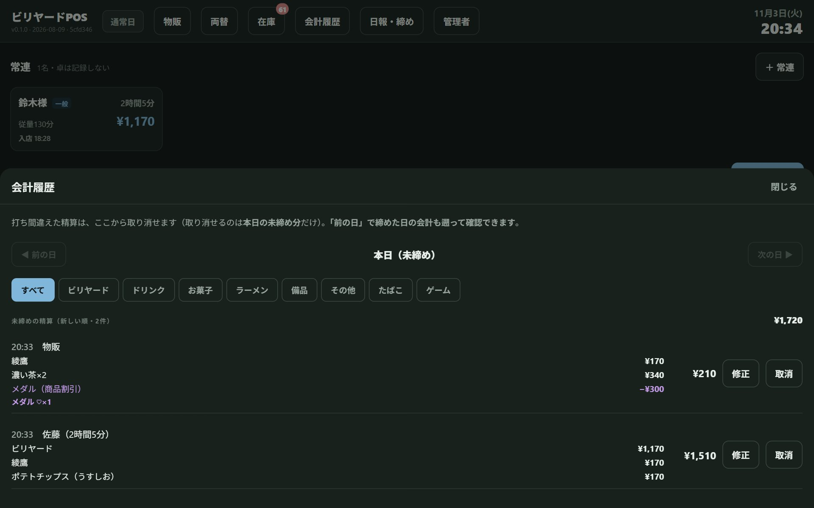
取消（なかったことにする）
← 写真は横にスクロールできます
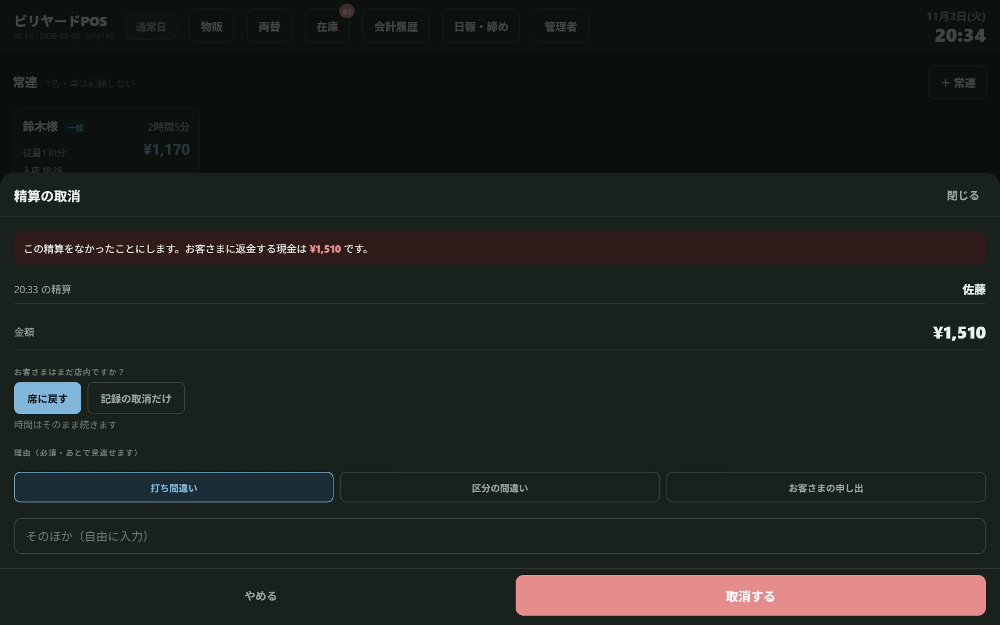
- 取消 をタップ。返金する金額が表示されます。
- ビリヤードの会計は、お客さまがまだ店内なら 席に戻す（時間はそのまま続く）。
- 理由を選んで（必須）取消する。商品の在庫は戻ります。
修正（取消して作り直す）
← 写真は横にスクロールできます
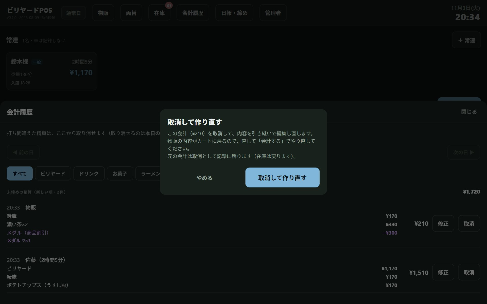
- 修正 → 取消して作り直す。
- 物販は内容がカートに戻るので、直して 会計する。
- ビリヤードはお客さまが席に戻るので、直してもう一度精算。
取消した会計は消えずに「取消（時刻）／理由」として残ります。◀ 前の日 で締めた日の会計も見返せます（見るだけ）。
10日報・締め
営業の最後に、レジの現金を数えて「締め」ます。営業日は昼12時〜翌日昼12時で区切ります。
← 写真は横にスクロールできます
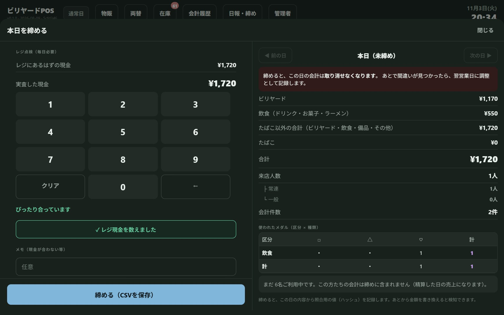
- メイン画面の 日報・締め。
- レジの現金を数え、テンキーで「実査した現金」に入力。「レジにあるはずの現金」と合っていれば「ぴったり合っています」、違えば多い／足りない金額が出ます（合わない時はメモに理由）。
- レジ現金を数えました（タップ） → 締める（CSVを保存） → 確認で 締める。
- CSVの保存先を選ぶ画面が出たら保存（バックアップは自動でクラウドにも送られます）。
その日の会計は取消・修正できなくなります。間違いが見つかったら翌営業日に調整として記録します。まだ店内のお客さまの会計は、精算した日の売上になります。
11在庫（棚卸し・ロス・発注点）
会計すると在庫は自動で減ります。数を直すのは在庫端末だけです（レジ端末は見るだけ）。
← 写真は横にスクロールできます
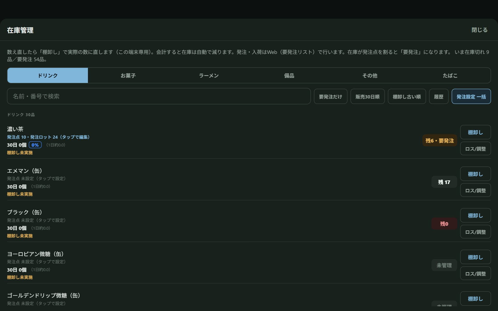
- 右の表示：残6・要発注＝発注点を下回った、残0＝在庫切れ、未管理＝まだ数えていない商品。
- 要発注だけ・販売30日順・棚卸し古い順で絞り込み・並べ替え、履歴で在庫の動き。
棚卸し（数え直した数に合わせる）
← 写真は横にスクロールできます
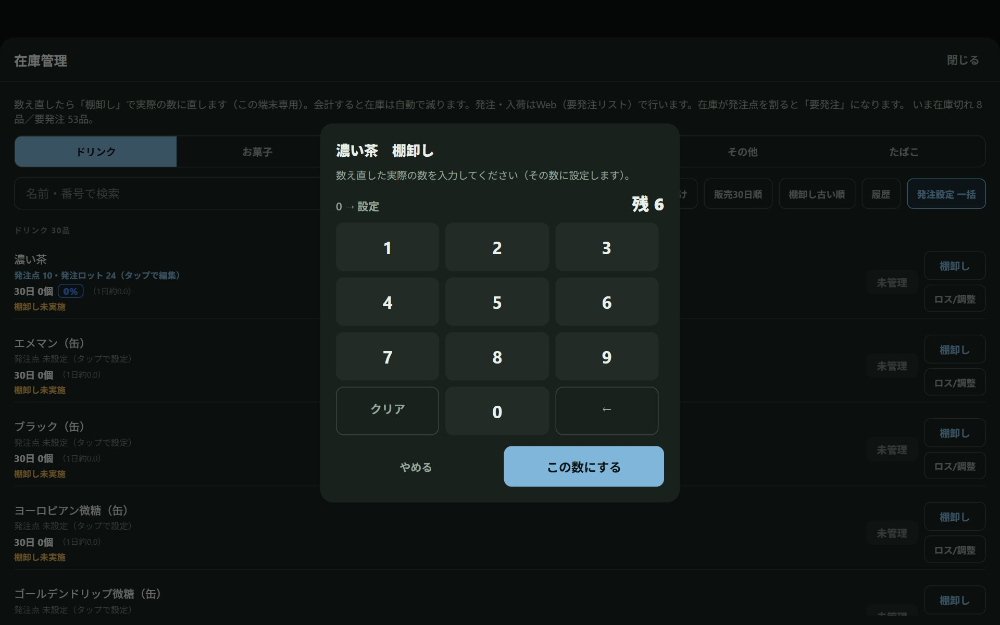
実際に数えた数を入れて この数にする。
ロス/調整（売れずに減った分）
← 写真は横にスクロールできます
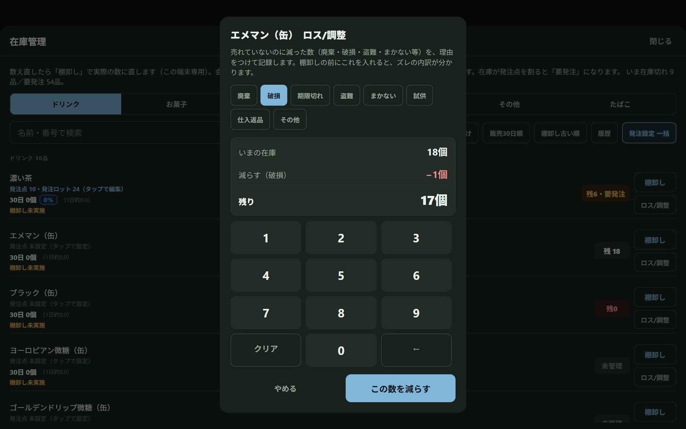
理由（廃棄・破損・期限切れ・盗難・まかない など）と数を入れて この数を減らす。棚卸しの前に入れるとズレの理由が分かります。
発注点・発注ロット
← 写真は横にスクロールできます
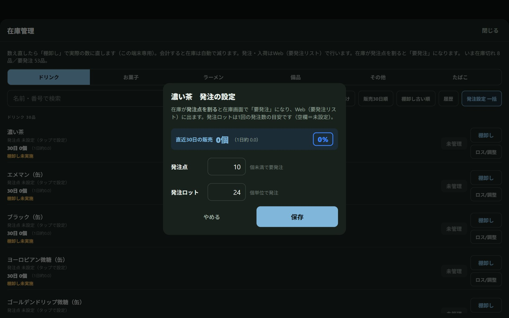
商品名の下の「発注点…（タップで設定）」をタップ。発注点より少なくなると要発注になり、Webの要発注リストに出ます。発注ロットはケースの入り数（24本など）。
在庫画面の上に「クラウド同期：同期済み（最終受信 ○:○○）」と緑で出ていれば最新です。黄色で「未送信あり」「まだ同期していません」の時は、通信を確認して 最新に更新。棚卸しの前に押しておくと安心です。
12商品の登録・編集
物販画面の ＋ 商品の登録・編集 から開きます。
← 写真は横にスクロールできます
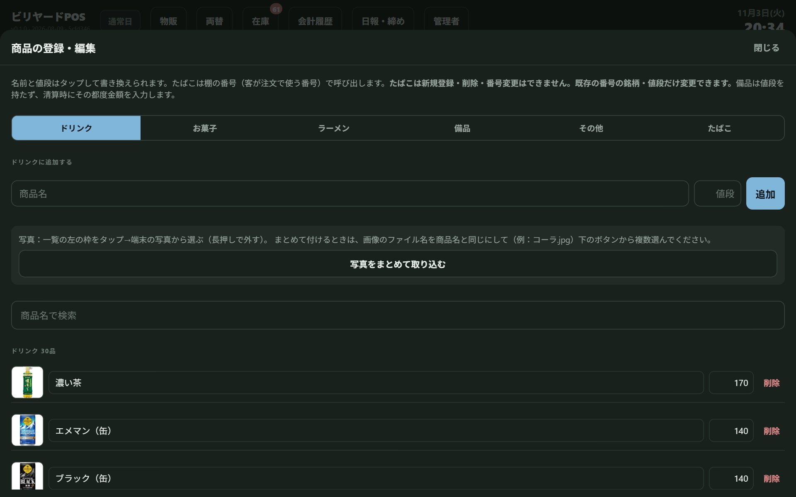
- 追加：カテゴリを選び、商品名と値段を入れて 追加（備品は種類を選んで名前だけ）。
- 変更：名前・値段の欄をタップして書き換え（欄から離れると保存）。
- 削除：削除 はすぐ消えます（確認なし）。
- 写真（ドリンク・お菓子・ラーメン）：左の枠をタップで端末の写真から選ぶ、長押しで外す。まとめて付ける時は画像のファイル名を商品名と同じにして 写真をまとめて取り込む。
たばこ
← 写真は横にスクロールできます
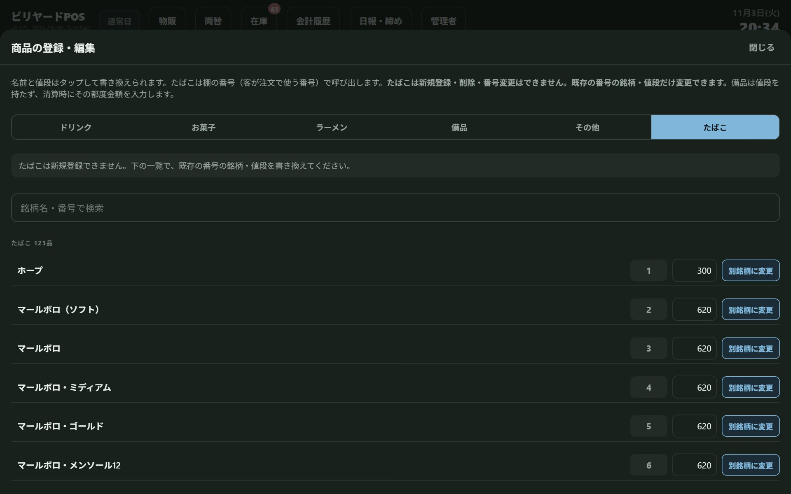
← 写真は横にスクロールできます
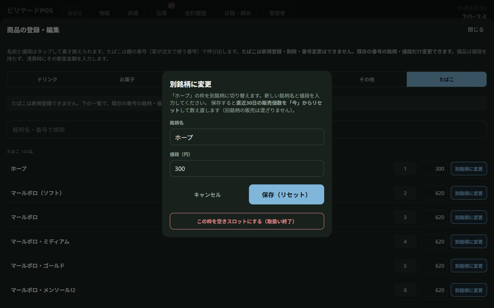
- たばこは棚番号ごとの枠です。新規登録・削除・番号の変更はできません。
- 値上げなど値段だけなら、一覧の値段の欄を書き換えます。
- 銘柄を入れ替える時は 別銘柄に変更 → 新しい銘柄名と値段 → 保存（リセット）（30日の販売数を数え直します）。
- 取扱いをやめる時は同じ画面の この枠を空きスロットにする（取扱い終了）。会計・在庫・要発注に出なくなります。
在庫が残っている時は、先に在庫端末で棚卸し（0個）かロス/調整をしておくと、次に入れる銘柄に古い在庫数が引き継がれません。
13要発注リスト（Web）
発注と入荷はスマホのWebページで行います。要発注リストを開く（パスワードは売上レポートと同じ。「この端末にパスワードを保存」で次から自動で開きます）。
① 発注
← 写真は横にスクロールできます
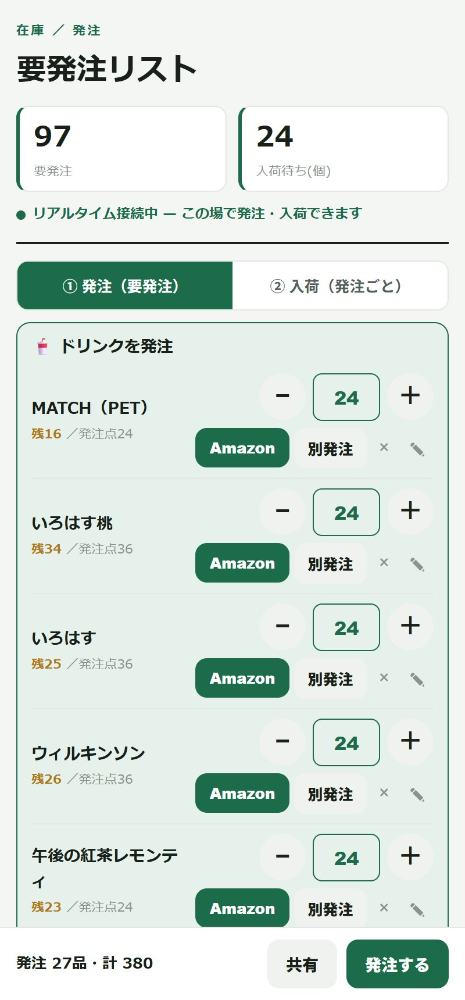
ドリンク（上の緑の枠）
- 数量を確認（− ＋）。
- Amazon：Amazonが開くのでカートに入れる（「カート追加済み」になる）。
別発注：Amazon以外で買う物。
×：今回は発注しない。 - Amazonで注文を確定したら、下の 一括発注：カート追加済みを入荷待ちにする。別発注の分は 別発注ぶんを発注済み（入荷待ち）にする。
✎（鉛筆）で商品ごとのAmazonリンクを登録・変更できます。
← 写真は横にスクロールできます
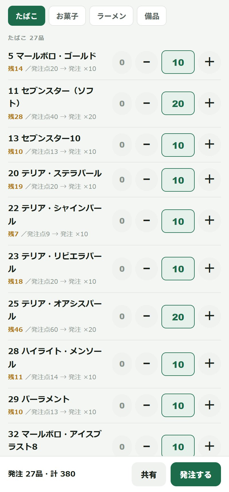
ドリンク以外（たばこ・お菓子など）
- カテゴリを選ぶ。たばこは棚番号順に並びます。
- 数量を確認。0 で今回は見送り、数字をタップで直接入力。
- 下の 発注する。お菓子は 📧 メールで発注 で発注書（CSV）を問屋さんへメールします。
② 入荷（届いたら）
← 写真は横にスクロールできます
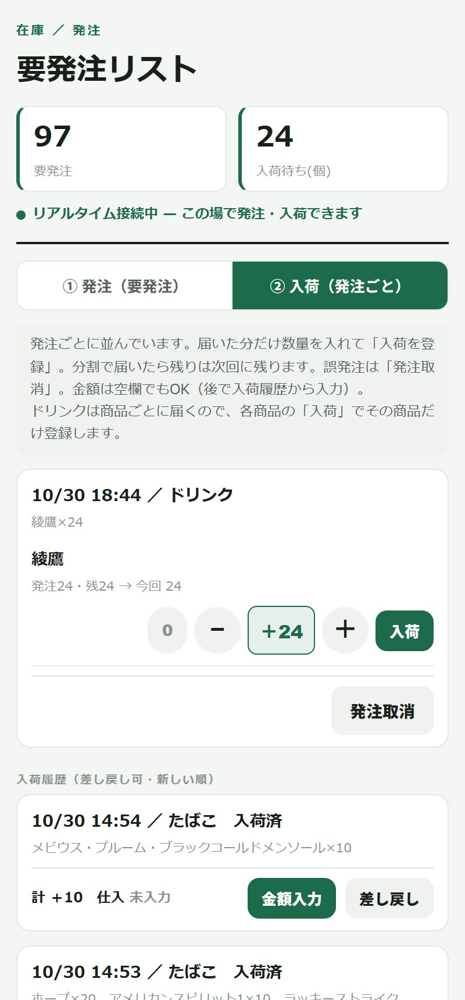
- ② 入荷（発注ごと） タブ。発注した時の単位で並んでいます。
- 届いた数を確認（分けて届いた時は届いた分だけ。残りは次回に残ります）。
- ドリンクは商品ごとの 入荷、それ以外はカードの 入荷を登録。
- 仕入れの金額を入力（分からなければ空欄でOK）。
間違えて発注した時は 発注取消（在庫は変わりません）。
← 写真は横にスクロールできます
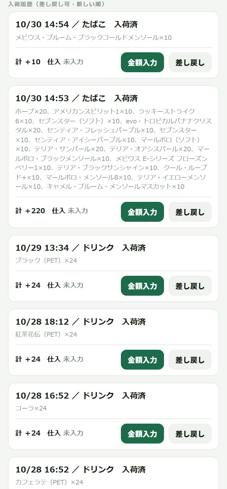
入荷履歴（入荷タブの下）
- 金額入力／金額修正：仕入れの金額をあとから入れる・直す。
- 差し戻し：間違えて入荷した時に取り消す（在庫も戻り、入荷待ちに戻ります）。
14料金のきまり
料金は自動で計算され、いちばん安い組み合わせ（10分ごと・パック）が選ばれます。
| 区分 | 10分 | パック |
|---|---|---|
| 一般 | ¥90 | 3時間 ¥1,200 ／ 5時間 ¥1,700 ／ 8時間 ¥2,700 |
| 学生・女性 | ¥80 | 3時間 ¥800 ／ 6時間 ¥1,400 ／ 9時間 ¥2,000 |
| 子供 | 無料 | |
- 時間は10分単位（四捨五入）。
- レディースデー（第1・3・5水曜）：女性は1時間¥100（1時間単位で切り上げ）。男性は通常料金。パックなし。
- 半額デー（第2・4水曜）：全員10分の料金が半額。パックなし。
- 特別な日の料金は11時から（11時より前は前の日の扱い）。
- パック料金や特別な日は、カードに「○時まで料金据え置き」と出ます。
15困ったとき
| こんな時 | こうする |
|---|---|
| 精算・物販を打ち間違えた | 締める前なら会計履歴から「取消」か「修正」。 |
| 締めたあとに間違いに気づいた | 取消できません。翌営業日に調整として記録します（店長へ）。 |
| 在庫の数が合わない | 在庫端末で「最新に更新」→ 数え直して「棚卸し」。壊れた・捨てた分は先に「ロス/調整」。 |
| メイン画面に「未アップロードの締めがあります」 | 表示をタップ →「バックアップ・復元」→「クラウドへ今すぐ保存」（管理者）。 |
| 「前回アプリが異常終了しました」と出た | 在店データは復元されています。内容を確認して「閉じる」。続くようなら店長へ。 |
| ドロワが開かない・レシートが出ない | プリンタの電源・Bluetoothを確認。「両替」で開くか試す。だめなら管理者の「レシートプリンタ」で接続テスト。 |
| 要発注リストに商品が出ない | 在庫端末でその商品の発注点が入っているか確認（発注点より少ない時だけ出ます）。 |
管理者メニュー（PINが必要）：ゲーム売上の入力、売上レポート、バックアップ・復元、レシートプリンタの設定、客用ディスプレイの設定。
ビリヤードPOS 操作マニュアル ／ 写真の名前・金額はサンプルです